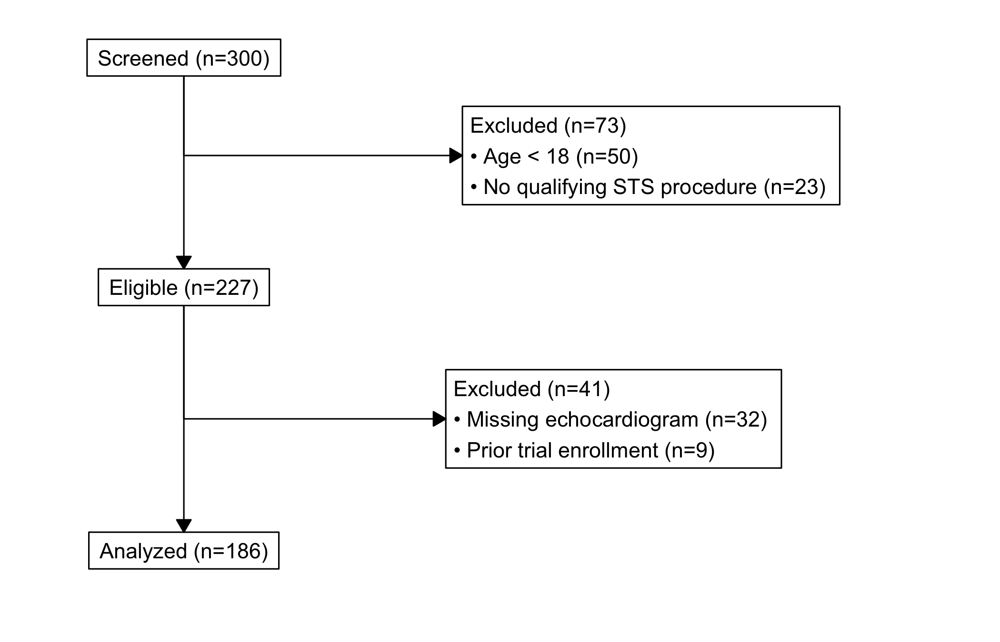

Every outcomes paper has to answer one question before any analysis: how did you get from the patients you started with to the patients you actually analysed? The CONSORT diagram is that answer drawn as a flow chart. It is the box-and-arrow figure near the front of the methods section: a top box of everyone screened, a side box at each step listing how many were dropped and why, and a bottom box of the final analysed cohort. A reviewer reads it to check that your exclusions are defensible and that the numbers add up.
Reach for it whenever you have built a study cohort by applying a sequence of exclusion rules and you need to account for every patient between the registry pull and the analysis set. hv_consort()(Ehrlinger 2026) builds the diagram through a multi-step API: hv_consort_start() initializes a patient-level tracker, hv_consort_exclude() adds an exclusion stage, and hv_consort() renders the result.
One thing sets this figure apart from the rest of the book. The diagram is drawn by the consort package (Dayim 2026) using grid graphics, not ggplot. So unlike every other plot here, you do not finish it with + theme_*() or any other ggplot layer. There is nothing to add a + to; the object renders itself. If you want to change its look, you do it through the constructor’s own arguments, not through ggplot. The tracking helpers below give you the exclusion-count audit you would otherwise build by hand.
21.2 The data it needs
The tracker starts from a data frame with one row per patient and whatever columns your exclusion rules will test. sample_consort_data() simulates a cardiac-surgery cohort and returns a finished three-stage hv_consort_tracker, which is the quickest way to see the shape of the object.
<hv_consort_tracker>
Patients : 300
ID column : patient_id
Stages : 3
[screened] Screened -- N = 300
-> excl [excl_screen]: 73
[eligible] Eligible -- N = 227
-> excl [excl_eligible]: 41
[analyzed] Analyzed -- N = 186
To build a tracker from your own data, start with hv_consort_start(), which records the patient identifier and marks every patient as screened. Each hv_consort_exclude() call then adds one exclusion stage. The rules are two-sided formulas, <condition> ~ "<reason>", evaluated against the data. The first matching rule wins, and patients dropped in an earlier stage are skipped in later ones, so each stage operates only on the survivors of the last. That last point is what keeps the counts honest: a patient is removed once, for the first reason that applies, and is not counted again.
<hv_consort_tracker>
Patients : 300
ID column : mrn
Stages : 3
[screened] Screened -- N = 300
-> excl [excl_screen]: 59
[eligible] Eligible -- N = 241
-> excl [excl_eligible]: 32
[analyzed] Analyzed -- N = 209
21.3 Build it
hv_consort() derives the box layout from the tracker’s stage metadata, and plot() draws it. There is no bare-then-decorated pair here, because there is nothing to decorate: the diagram comes out finished. By default every exclusion column becomes a side box; pass a character vector to side_box if you want to show only some of them.
fig <-hv_consort(tracker)plot(fig)

Figure 21.1: CONSORT patient-flow diagram tracing a cardiac-surgery cohort from screening through exclusions to the analysed set
21.4 Read it
A CONSORT diagram is read top to bottom, with a glance sideways at each step. Look for:
The arithmetic. Every patient in the top box ends up either in a side box (excluded) or in the box below. The number entering a stage minus the side-box count should equal the number in the next box down. If it does not, an exclusion rule is double-counting or a patient is falling through; the tracker’s own audit (below) is where you check.
The biggest side box. The exclusion that drops the most patients is the one a reviewer scrutinises hardest. If most of your cohort leaves at a single step, be ready to defend that rule, because it is doing most of the work of defining who you studied.
The final n. The bottom box is the number every later figure is built on. It is worth carrying that number forward into the captions of the survival and trend chapters so the reader never loses track of the denominator.
21.5 Variations
21.5.1 Auditing the cohort
The tracker is auditable, which is the point of building the diagram through it rather than drawing boxes by hand. hv_consort_summary() returns a per-stage count table you can drop straight into a methods section.
hv_consort_patients() returns the patient IDs active at a stage, or the subset excluded for a specific reason. This is how you go from a box on the diagram back to the actual patients behind it, to spot-check an exclusion or pull a list for a sensitivity analysis.
# IDs still in the analysed cohorthead(hv_consort_patients(tracker, "Analyzed"))
Trying to theme it like a ggplot. This is the mistake to avoid. The diagram is grid graphics, so plot(fig) + theme_hv_manuscript() (or any + layer) will error or be ignored. Adjust it through hv_consort()’s own arguments, such as side_box, not through ggplot.
Overlapping exclusion rules. Because the first matching rule wins, the order of the formulas inside an hv_consort_exclude() call decides which reason a patient is logged under when more than one applies. Put the rule you want to be the recorded reason first, and read the summary table to confirm the counts land where you expect.
Numbers that do not reconcile. If the boxes do not add up, do not patch the figure; fix the rules. Use hv_consort_summary() and hv_consort_patients() to find the patients in question rather than trusting the visual.
A stale final n in captions. The bottom-box count is the denominator for everything downstream. Re-run the tracker whenever the cohort or the exclusion rules change, and update the figure captions that quote it, so the diagram and the rest of the manuscript never disagree.
Ehrlinger, John. 2026. hvtiPlotR: HVTI Ggplot2 Themes and Clinical Plot Functions for the Cleveland Clinic Heart & Vascular Institute. https://github.com/ehrlinger/hvtiPlotR.